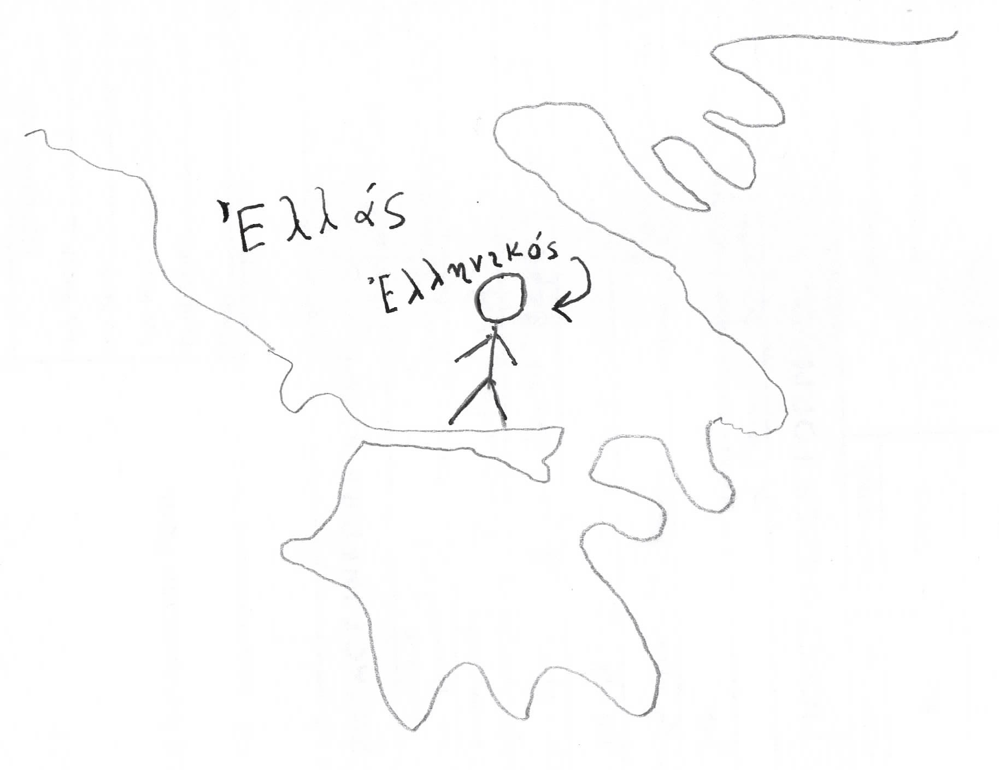

ὁ Γρηγόριος ἀνὴρ Ἑλληνικός ἐστιν. ἡ Εὐγενίᾱ γυνὴ Ἑλληνική ἐστιν. ὁ Ἀλέξιος παῖς Ἑλληνικός ἐστιν. καὶ ὁ Δημήτριος παῖς Ἑλληνικός ἐστιν. ἡ δὲ Εἰρήνη ἐστὶ κόρη Ἑλληνική. καὶ ἡ Σοφίᾱ ἐστὶ κόρη Ἑλληνική.
ὁ Ἀλέξιος καὶ ὁ Δημήτριος οὐκ ἄνδρες, ἀλλὰ παῖδές εἰσιν. ἄνδρες εἰσὶ Γρηγόριος καὶ Σωσίᾱς καὶ Τροχίλος. γυναῖκές εἰσιν Εὐγενίᾱ καὶ Σύρᾱ καὶ Κίλισσα. ἆρα ἡ Σοφίᾱ γυνή; οὐκ ἔστιν γυνή, ἀλλὰ κόρη ἡ Σοφίᾱ.
Γρηγόριος, Εὐγενίᾱ, Ἀλέξιος, Δημήτριος, Εἰρήνη, Σοφίᾱ, Σωσίᾱς, Τροχίλος, Κίλισσα, ἐστὶν οἰκίᾱ Ἑλληνική. ὁ μὲν Γρηγόριος πατήρ ἐστιν, ἡ δὲ Εὐγενίᾱ μήτηρ ἐστίν. πατὴρ Ἀλεξίου καὶ Δημητρίου ἐστὶν ὁ Γρηγόριος. ὁ Γρηγόριος καὶ πατήρ ἐστιν τῆς Σοφίας καὶ τῆς Εἰρήνης. μήτηρ Ἀλεξίου καὶ Δημητρίου, Σοφίᾱς καὶ Εἰρήνης ἐστὶν ἡ Εὐγενίᾱ. ὁ δὲ Ἀλέξιος υἱός ἐστιν Γρηγορίου. καὶ υἱὸς Εὐγενίᾱς ἐστὶν ὁ Ἀλέξιος. καὶ ὁ Δημήτριός ἐστιν υἱὸς τοῦ Γρηγορίου καὶ τῆς Εὐγενίᾱς.
τίς
τίς ἐστιν Ἀλέξιος; ὁ Ἀλέξιός ἐστι παῖς Ἑλληνικός. τίς ἐστιν ὁ πατὴρ τοῦ Ἀλεξίου; Γρηγόριος ὁ πατὴρ τοῦ Ἀλεξίου ἐστίν. τίς ἡ μήτηρ τοῦ Ἀλεξίου ἐστίν; ἡ μήτηρ τοῦ Ἀλεξίου ἐστὶν Εὐγενίᾱ. τίς Εἰρήνη ἐστίν; κόρη Ἑλληνική ἐστιν ἡ Εἰρήνη. τίς ἐστιν ἡ μήτηρ τῆς Εἰρήνης; Εὐγενίᾱ ἡ μήτηρ τῆς Εἰρήνης ἐστίν. καὶ ὁ Γρηγόριος πατὴρ τῆς Εἰρήνης ἐστίν. ἡ Εἰρήνη ἐστὶ θυγάτηρ τοῦ Γρηγορίου καὶ τῆς Εὐγενίᾱς.
τίνες εἰσὶν οἱ υἱοὶ τοῦ Γρηγορίου; οἱ υἱοὶ τοῦ Γρηγορίου εἰσὶν Ἀλέξιος καὶ Δημήτριος. τίνες εἰσὶν αἱ θυγατέρες τῆς Εὐγενίᾱς; αἱ θυγατέρες τῆς Εὐγενίᾱς εἰσὶν Εἰρήνη καὶ Σοφίᾱ. Ἀλέξιος, Δημήτριος, Εἰρήνη, Σοφίᾱ εἰσὶ τέσσαρα παιδία. παιδία ἐστιν υἱοὶ καὶ θυγατέρες, ἢ παῖδες καὶ κόραι. ἐν τῇ οἰκίᾳ τοῦ Γρηγορίου εἰσὶ τέσσαρα παιδία, δύο υἱοὶ καὶ δύο θυγατέρες.
ἆρα Σωσίᾱς υἱὸς τοῦ Γρηγορίου; ὁ Σωσίᾱς οὐκ ἔστιν υἱὸς τοῦ Γρηγορίου, ἀλλὰ δοῦλος τοῦ Γρηγορίου ἐστίν. ὁ Γρηγόριος δεσπότης τοῦ Σωσίου ἐστίν. ὁ Γρηγόριός ἐστι δεσπότης τῶν δούλων. ὁ δὲ Σωσίᾱς καὶ ὁ Τροχίλος εἰσὶ δοῦλοι δύο. ὁ δὲ Γρηγόριος ἐστὶ καὶ πατὴρ παιδίων καὶ δεσπότης δούλων.
ἆρα Κίλισσα θυγάτηρ τῆς Εὐγενίᾱς; ἡ Κίλισσα οὐκ ἔστιν θυγάτηρ τῆς Εὐγενίᾱς, ἀλλὰ δούλη τῆς Εὐγενίᾱς ἐστίν. ἡ δὲ Εὐγενίᾱ ἐστί δέσποινα τῆς δούλης, τῆς Κιλίσσης. καὶ ἡ Σύρᾱ ἐστὶ δούλη. καὶ ἡ Σύρᾱ καὶ ἡ Κίλισσά εἰσι δύο δοῦλαι. ἡ δὲ Εὐγενίᾱ δέσποινά ἐστι τῶν δουλῶν.
τίνος δοῦλός ἐστι Τροχίλος; ὁ Τροχίλος τοῦ Γρηγορίου ἐστὶν δοῦλος. τίνος δοῦλός ἐστι Σωσίᾱς; καὶ ὁ Σωσίας τοῦ Γρηγορίου ἐστὶ δοῦλος. τίνος δούλη ἐστὶ Σύρᾱ; ἡ Σύρᾱ ἐστὶ δούλη τῆς Εὐγενίᾱς. καὶ τίνος δούλη ἐστὶ Κίλισσα; τῆς Εὐγενίᾱς ἐστὶ Κίλισσα ἡ δούλη.
πόσα;
πόσα ἔστιν παιδία ἐν τῇ οἰκίᾳ; ἔστι ἐν τῇ οἰκίᾳ τῆς Εὐγενίᾱς καὶ τοῦ Γρηγορίου τέσσαρα (4) παιδία. πόσοι υἱοὶ καὶ πόσαι θυγατέρες; δύο (2) υἱοὶ καὶ δύο (2) θυγατέρες εἰσὶν ἐν τῇ οἰκίᾳ. πόσοι δοῦλοι ἐν τῇ οἰκίᾳ εἰσίν; ἑκατόν (100); οὐχ ἑκατὸν, ἀλλὰ πεντήκοντα (50). ἐν τῇ οἰκίᾳ τοῦ Γρηγορίου εἰσὶ πολλοὶ μὲν δοῦλοι, ὀλίγα δὲ παιδία. ὁ δὲ Γρηγόριός ἐστι κῡ́ριος πολλῶν δούλων.
τὸ δύο καὶ τὸ τρεῖς, καὶ τὸ τέσσαρα, ἀριθμοί εἰσιν. καὶ τὸ ἑκατὸν καὶ τὸ πεντήκοντά εἰσιν ἀριθμοί. ὁ ἀριθμὸς τῶν δούλων ἔστιν πεντήκοντα. ὁ δὲ ἀριθμὸς τῶν παιδίων ἐστὶ τέσσαρα. ὁ μὲν ἀριθμὸς τῶν δούλων μέγας ἐστίν, ὁ δὲ ἀριθμὸς τῶν παιδίων μῑκρός. μέγας μὲν ἀριθμὸς δούλων, μῑκρὸς δὲ ἀριθμὸς παιδίων ἐν τῇ οἰκίᾳ τοῦ Γρηγορίου ἐστίν.
ὁ Γρηγόριός ἐστιν ἀνὴρ Ἑλληνικός. ὁ δὲ Τροχίλος ἐστὶν ἀνὴρ Ῥωμαϊκός, ἀλλὰ δοῦλος. ὁ δὲ Σωσίᾱς ἐστὶν ἀνὴρ Συριακός, ἀνὴρ τῆς Συρίᾱς. ὁ Γρηγόριος οἰκεῖ ἐν τῇ Συρίᾳ. ἡ οἰκίᾱ τοῦ Γρηγορίου ἐστὶν ἐν τῇ Συρίᾳ, ἐν τῇ Ἀντιοχείᾳ. ἡ Ἀντιόχειά ἐστιν πόλις ἐν τῇ Συρίᾳ.
ἆρα μὴ ἡ Εὐγενίᾱ Συριακή; οὐ Συριακή, ἀλλὰ Ἑλληνική ἐστιν. ἆρα μὴ ἡ Κίλισσα Ῥωμαϊκή; οὐ Ῥωμαϊκή, ἀλλὰ Συριακή ἐστιν ἡ Κίλισσα. καὶ Σύρᾱ ἐστί Συριακή. καὶ Κίλισσα καὶ Σύρᾱ εἰσὶ Συριακαί.
τίς ἐστιν Μάρκος; ὁ Μάρκος ἐστὶν δεσπότης Ῥωμαϊκός. ὁ Μάρκος οἰκεῖ ἐν τῇ Ἀντιοχείᾳ. καὶ ὁ Μάρκος καὶ ὁ Γρηγόριός εἰσι δεσπόται δύο. ὁ δὲ Σωσίᾱς ἐστί δοῦλος τοῦ Γρηγορίου.
Μαρ· τίνος δοῦλός ἐστιν Σωσίᾱς;
Γρη· ὁ Σωσίᾱς ἐστὶν δοῦλος ἐμοῦ.
Μαρ· ἆρα ὁ Τροχίλος δοῦλός σου;
Γρη· ναί, καὶ ὁ Τροχίλος ἐστὶν δοῦλός μου. οἱ δοῦλοί μού εἰσιν Σωσίας καὶ Τροχίλος καὶ πολλοὶ ἄλλοι.
Μαρ· ἆρα ἡ Σύρᾱ δούλη σου;
Γρη· ναί, ἡ Σύρᾱ δούλη μού ἐστιν, καὶ ἡ Κίλισσά ἐστιν δούλη ἐμοῦ. αἱ δοῦλαί μού εἰσιν Σύρᾱ καὶ Κίλισσα καὶ πολλαὶ ἄλλαι. ἡ οἰκίᾱ μού ἐστι μεγάλη.
Μαρ· πόσοι δοῦλοί εἰσιν ἐν τῇ οἰκίᾳ σου;
Γρη· πεντήκοντα δοῦλοί εἰσιν ἐν τῇ οἰκίᾳ μου.
Μαρ· τί;
Γρη· ὁ ἀριθμὸς τῶν δούλων μού ἐστιν πεντήκοντα.
Μαρ· μόνον πεντήκοντα; ὁ ἀριθμὸς τῶν δούλων σού ἐστιν μῑκρός. ἐν τῇ οἰκίᾳ μου ἑκατὸν δοῦλοί εἰσιν.